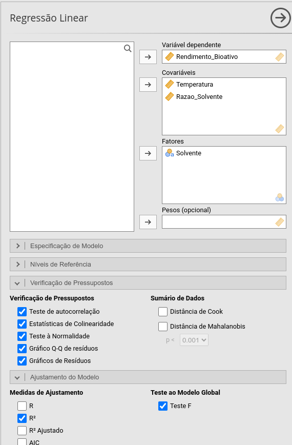
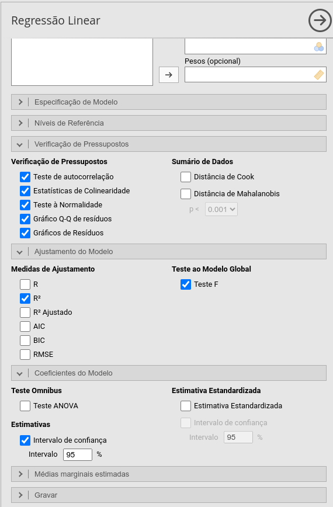
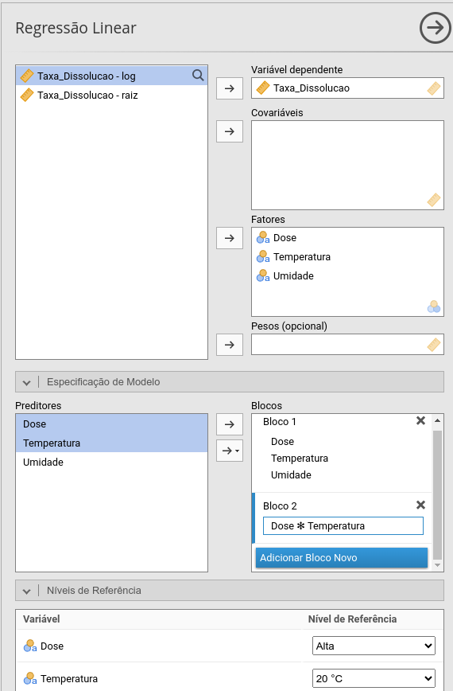
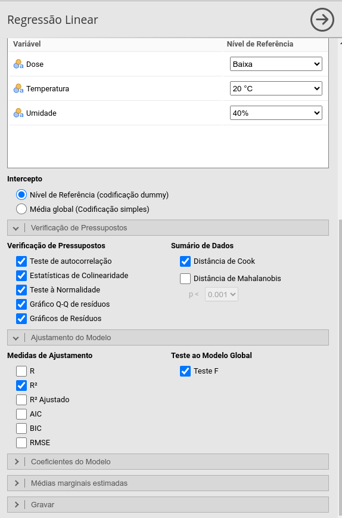
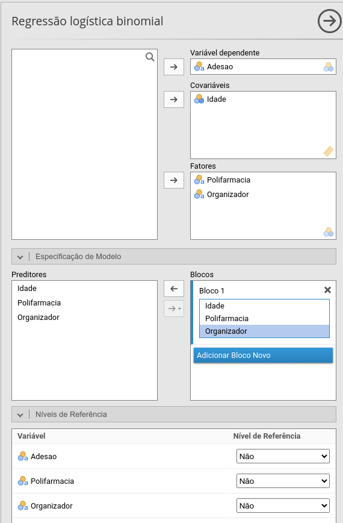
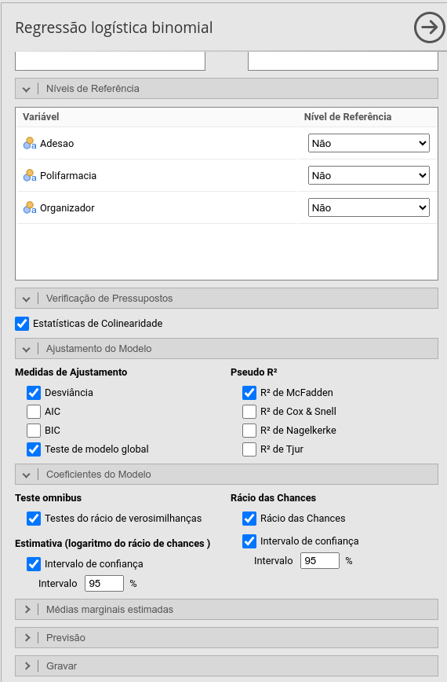

Modelos de regressão
Prof. Dr. Sadraque E. F. Lucena
http://sadraquelucena.github.io/FARMA0048
FARMA0048 - Bioestatística
Programa de Pós-Graduação em Ciências Farmacêuticas (PPGCF)
Modelos de regressão
- Uma modelo de regressão é um método estatístico que modela a relação matemática entre uma variável de interesse e seus potenciais fatores determinantes.
- Desfecho (variável resposta): É o resultado clínico ou farmacológico de interesse que o modelo busca mensurar e prever (ex.: nível glicêmico, cura/óbito ou contagem de reações).
- Variável explicativa: É a intervenção, dose do fármaco ou característica do paciente usada para explicar ou prever a variação no desfecho.
- Cuidado! Associação indica apenas dependência estatística entre variáveis.
- Causalidade exige comprovação de que a intervenção provoca diretamente o desfecho. Isso depdende do seneho do estudo.
Modelos de regressão
- O tipo de desfecho determina o modelo.
- Desfecho contínuo → regressão linear;
- Desfecho binário → regressão logística.
Regressão linear
- Esse modelo é usado quando o desfecho é numérico contínuo.
- Considere que \(y\) é o desfecho e \(x_1,x_2,\ldots,x_n\) são as variáveis explicativas.
- O modelo é \[y = \beta_0 + \beta_1 x_1 + \beta_2 x_2 + \cdots + \beta_p x_p + \varepsilon\]
- Exemplo:
(tempo de desintegração) = 2,5 + 0,15 (força de compressão) – 0,80 (% de desintegrante) + \(\varepsilon\)
- Cada coeficiente representa a associação entre aquele preditor e o desfecho, mantendo constantes os demais preditores do modelo.
- \(\varepsilon\) é o erro aleatório.
Regressão linear
O modelo pode ser apresentado assim:
| Variável | Coeficiente (β) | Erro-Padrão (EP) | IC 95% | p |
|---|---|---|---|---|
| Intercepto | 2,50 | 0,35 | [1,81; 3,19] | 0,008 |
| Força de Compressão (kN) | 0,15 | 0,04 | [0,07; 0,23] | 0,037 |
| Desintegrante (%) | –0,80 | 0,12 | [–1,04; –0,56] | <0,001 |
Variável resposta: Tempo de desintegração (minutos).
Teste F: \(F = 18{,}45\); \(gl = 2{,}27\); \(p = 0{,}002\).
Ajuste do modelo: \(R^2 = 0{,}84\); \(p < 0{,}001\).
IC 95%: Intervalo de Confiança de 95%.
Regressão linear
Teste F (\(p = 0{,}002\)): Significa que o modelo como um todo é estatisticamente significativo (\(p<0{,}05\)) para explicar o tempo de desintegração.
\(R^2 = 0{,}84\): Indica que 84% da variabilidade no tempo de desintegração é explicada pela força de compressão e porcentagem de desintegrante.
Para os coeficientes das variáveis explicativas:
- Quando \(p < 0{,}05\), a variável contribui significativamente para o desfecho.
- Lembre-se: \(p\) indica apenas a presença de associação estatística; a magnitude do coeficiente (\(\beta\)) é o que determina o impacto real na rotina farmacêutica.
Regressão linear
Interpretação dos coeficientes do exemplo:
- Força de Compressão (\(\beta = 0{,}15\); \(p = 0{,}037\)): Apresenta relação direta e estatisticamente significativa (\(p < 0{,}05\)). Cada 1 kN adicional aumenta o tempo de desintegração em 9 segundos.
- Desintegrante (\(\beta = -0{,}80\); \(p < 0{,}001\)): Apresenta relação inversa e estatisticamente significativa. Cada aumento de 1% na proporção de desintegrante reduz o tempo de desintegração em 48 segundos.
Pressupostos e Diagnósticos
| Pressuposto | Ferramenta | Interpretação | Ação |
|---|---|---|---|
| Normalidade dos Resíduos | Teste de Shapiro-Wilk + Gráfico Q-Q |
\(p > 0{,}05\): Resíduos normais. | Se \(n > 30\), o modelo é robusto a pequenos desvios. Se houver viés grave, transforme \(Y\) ou use MLG. |
| Homoscedasticidade | Gráfico Resíduos vs. Ajustados (Fitted) | Gráfico: Pontos dispersos ao acaso, sem formato de “funil” ou “cone”. | Se houver funil (heteroscedasticidade), considere transformação (\(log(Y)\)) ou erros-padrão robustos. |
Pressupostos e Diagnósticos
| Pressuposto | Ferramenta | Interpretação | Ação |
|---|---|---|---|
| Linearidade | Gráfico Resíduos vs. Ajustados / Residual Plots | Gráfico: Sem padrões parabólicos ou em “U”. Linha de tendência horizontal em zero. | Se houver curvatura, adicione termos quadráticos (\(X^2\)) ou transforme a variável explicativa. |
Pressupostos e Diagnósticos
| Pressuposto | Ferramenta | Interpretação | Ação |
|---|---|---|---|
| Independência | Teste de Durbin-Watson | \(p > 0{,}05\) indica ausência de autocorrelação. | Importante em dados temporais/seriados. Se violado, considere modelos para dados correlacionados. |
| Multicolinearidade | Estatísticas VIF e Tolerance | VIF \(< 5\) e Tolerance \(> 0{,}2\). | Se VIF \(\geq 5\), remova um dos preditores redundantes ou combine-os em um índice. |
Pressupostos e Diagnósticos
| Pressuposto | Ferramenta | Interpretação | Ação |
|---|---|---|---|
| Pontos Influentes | Distância de Cook | Cook \(> 1\): Ponto influente. | Investigar o dado (erro de digitação?). Não remova sem justificativa clínica/metodológica. |
Exemplo 5.1
Um grupo de pesquisa em Farmácia Verde avaliou a eficiência de extração de flavonoides anti-inflamatórios a partir de resíduos agroindustriais (\(N = 60\)), comparando um solvente orgânico tradicional com um Solvente Eutético Profundo Natural (NADES).
Variáveis do Estudo:
Desfecho (\(Y\)): Rendimento de Extração (\(\text{mg/g}\) de planta) — Contínua
Preditor 1 (\(X_1\)): Temperatura do Processo (\(30^\circ\text{C}\) a \(70^\circ\text{C}\)) — Contínua
Preditor 2 (\(X_2\)): Razão Solvente/Massa (\(10\) a \(30\text{ mL/g}\)) — Contínua
Preditor 3 (\(X_3\)): Tipo de Solvente (Etanol 70% vs. NADES Verde) — Categórica
Dados: exemplo5.1.csv


Exercício 5.1
Tabela de Coeficientes da Regressão Múltipla (\(N = 60\))
| Variável | \(\beta\) | Erro-Padrão | IC 95% | \(t\) | \(p\) |
|---|---|---|---|---|---|
| Intercepto | 2,88 | 2,50 | [-2,13; 7,90] | 1,15 | 0,254 |
| Solvente (NADES Verde vs. Etanol 70%) | 11,64 | 0,90 | [9,83; 13,46] | 12,87 | < 0,001 |
| Temperatura (\(^\circ\text{C}\)) | 0,37 | 0,04 | [0,29; 0,45] | 8,89 | < 0,001 |
| Razão Solvente (mL/g) | 0,88 | 0,07 | [0,75; 1,01] | 13,16 | < 0,001 |
Variável resposta: Rendimento_Bioativo (mg/g).
Ajuste do Modelo: \(R^2 = 0{,}900\); Teste F: \(F_{(3, 56)} = 171{,}45\) (\(p < 0{,}001\)).
IC 95%: Intervalo de Confiança de 95%.
Exercício 5.1
- O Teste F (\(p < 0{,}001\)) indica que o conjunto de variáveis explica significativamente o rendimento de extração do bioativo.
- \(R^2 = 0{,}900\) significa que 90,0% da variabilidade no rendimento do bioativo é explicada pelas variáveis do modelo.
- Diagnosticando o Modelo:
- Normalidade dos Resíduos: Teste de Shapiro-Wilk (\(W = 0{,}98\), \(p = 0{,}399\)) confirma a distribuição normal dos resíduos.
- Multicolinearidade: Ausente (VIF \(< 1{,}05\) e Tolerância \(> 0{,}97\) para todas as variáveis).
- Autocorrelação: Teste de Durbin-Watson apresentou \(DW = 1{,}42\) (\(p = 0{,}030\)).
Exercício 5.1
- Interpretação dos Coeficientes (\(\beta\)):
- A referência do modelo é o Etanol 70%.
- Intercepto (\(2{,}88\); \(p = 0{,}254\)): Rendimento base estimado (\(2{,}88\text{ mg/g}\)) quando a temperatura e a razão de solvente são teoricamente nulas (não estatisticamente diferente de zero).
- Solvente (+11,64): Mudar do Etanol 70% para o NADES Verde aumenta o rendimento do bioativo em 11,64 mg/g.
- Temperatura (+0,37): Cada \(1^\circ\text{C}\) de aumento na temperatura incrementa o rendimento em 0,37 mg/g.
- Razão Solvente (+0,88): Cada aumento de \(1\text{ mL/g}\) na proporção de solvente gera um ganho de 0,88 mg/g no rendimento.
Exercício 5.2
Um estudo de pré-formulação farmacêutica avaliou o efeito de fatores operacionais na Taxa de Dissolução (%) de um comprimido após 30 minutos (\(n = 48\)).
Variáveis do Estudo:
- Desfecho (\(Y\)): Taxa de Dissolução em 30 min (%) – Variável Contínua
- Preditor 1 (\(X_1\)): Dose do Fármaco (Baixa vs. Alta)
- Preditor 2 (\(X_2\)): Temperatura do Ensaio (20 °C vs. 30 °C vs. 40 °C)
- Preditor 3 (\(X_3\)): Umidade Relativa do Ar (40% vs. 75%)
Perguntas de Pesquisa: Existe interação significativa entre a Dose e a Temperatura no perfil de dissolução? Como a Umidade Relativa ajusta o efeito principal do processo?
- Dados: exemplo5.2.csv


Exemplo 5.2
Tabela de Coeficientes da Regressão Múltipla com Interação (\(N = 48\))
| Variável | \(\beta\) | Erro-Padrão | IC 95% | \(t\) | \(p\) |
|---|---|---|---|---|---|
| Intercepto | 50,68 | 0,90 | [48,86; 52,50] | 56,15 | < 0,001 |
| Dose (Alta vs. Baixa) | 14,07 | 1,18 | [11,69; 16,46] | 11,91 | < 0,001 |
| Temperatura (30 °C vs. 20 °C) | -7,90 | 1,18 | [-10,29; -5,51] | -6,69 | < 0,001 |
| Temperatura (40 °C vs. 20 °C) | -21,93 | 1,18 | [-24,31; -19,54] | -18,56 | < 0,001 |
| Umidade (75% vs. 40%) | -5,18 | 0,68 | [-6,56; -3,80] | -7,59 | < 0,001 |
| Dose \(\times\) Temp (Alta vs. Baixa \(\times\) 30 °C vs. 20 °C) | 1,21 | 1,67 | [-2,17; 4,58] | 0,72 | 0,475 |
| Dose \(\times\) Temp (Alta vs. Baixa \(\times\) 40 °C vs. 20 °C) | -9,98 | 1,67 | [-13,36; -6,61] | -5,97 | < 0,001 |
Variável resposta: Taxa de Dissolução (%).
Ajuste do Modelo: \(R^2 = 0{,}973\); Teste F: \(F_{(6, 41)} = 248{,}64\) (\(p < 0{,}001\)).
IC 95%: Intervalo de Confiança de 95%.
Exemplo 5.2
- O Teste F (\(p < 0{,}001\)) indica que as variáveis explicam a variação da taxa de dissolução.
- \(R^2 = 0{,}973\) significa que 97,3% da variabilidade na taxa de dissolução do comprimido é explicada pelas variáveis incluídas no modelo.
- Interpretação dos Coeficientes (\(\beta\)):
- As referências são dose baixa, temperatura de 20ºC, Umidade em 40%.
- Umidade (–5,18$): Deixar o ambiente úmido tira 5,18% da dissolução, agindo de forma independente da dose e da temperatura.
- Dose (+14,07): A 20°C, aumentar a dose para a versão “Alta” aumenta a taxa de dissolução em 14,07% com relação à dose baixa.
Exemplo 5.2
- Interpretação dos Coeficientes (\(\beta\)):
- Interação Dose \(\times\) Temp 30 °C (\(+1{,}21\); não significativo): A 30 °C, a Dose Alta se comporta praticamente da mesma forma que a 20°C.
- Interação Dose \(\times\) Temp 40 °C (\(-9{,}98\); significativo): A 40 °C, o benefício de usar a Dose Alta é atenuado em 9,98% devido ao estresse térmico. O efeito da dose depende de quão quente está o ambiente.
- Efeito Principal da Temperatura: Em relação a 20 °C, a elevação para 30 °C reduz a dissolução em 6,70% (\(\beta = -6{,}70\); \(p < 0{,}001\)), enquanto a elevação para 40 °C gera uma queda de 31,91% (\(\beta = -31{,}91\); \(p < 0{,}001\)).
Regressão logística
- Usado quando o desfecho (\(y\)) é binário (ex.: Sucesso/Falha, Adesão/Não-adesão, Apresenta Efeito Colateral: Sim/Não).
- Considere que \(P\) é a probabilidade do evento de interesse e \(x_1, x_2, \ldots, x_p\) são as variáveis explicativas.
- O modelo é representado por: \[logit(p) = \beta_0 + \beta_1 x_1 + \beta_2 x_2 + \cdots + \beta_p x_p\]
- Exemplo:
logit(Falha na Dissolução) = –2,10 + 0,45 (Idade da Matriz) – 1,20 (Concentração de Polímero)
- Os coeficientes originais (\(\beta\)) representam a mudança na razão de chances em escala logarítmica, mas na prática interpretamos a Razão de Chances (\(OR = e^\beta\)).
Regressão logística
Tabela de Estimativas do Modelo — Falha na Dissolução (Sim vs. Não)
| Preditor | Coeficiente (\(\beta\)) | Erro-Padrão | Razão de Chances (\(OR\)) | IC 95% para \(OR\) | \(p\) |
|---|---|---|---|---|---|
| Intercepto | -2,10 | 0,65 | 0,12 | [0,03; 0,44] | 0,001 |
| Idade da Matriz (meses) | 0,45 | 0,18 | 1,57 | [1,10; 2,23] | 0,012 |
| Concentração de Polímero (%) | -1,20 | 0,32 | 0,30 | [0,16; 0,56] | < 0,001 |
Variável resposta: Falha na Dissolução (1 = Sim, 0 = Não; Nível de Referência = Não).
Teste da Razão de Verossimilhança: \(\chi^2 = 28{,}42\); \(gl = 2\); \(p < 0{,}001\).
Ajuste do Modelo: Pseudo \(R^2\) de McFadden = \(0{,}412\); AIC = \(42{,}15\).
Regressão logística
- Teste da Razão de Verossimilhança (\(\chi^2 = 28{,}42\); \(p < 0{,}001\)): Substitui o Teste F. Indica que o modelo é válido.
- Pseudo \(R^2\) de McFadden (\(0{,}412\)): Substitui o \(R^2\) tradicional. Valores entre \(0{,}20\) e \(0{,}40\) indicam um excelente ajuste do modelo aos dados binários.
- Para a Razão de Chances (\(OR = e^\beta\)):
- \(OR = 1\): Ausência de efeito (o preditor não altera as chances do evento).
- \(OR > 1\): O preditor aumenta as chances do evento ocorrer (fator de risco/exposição positiva).
- \(OR < 1\): O preditor reduz as chances do evento ocorrer (fator de proteção).
- Se o IC 95% da \(OR\) contiver o valor \(1{,}00\), o preditor não é estatisticamente significativo (\(p > 0{,}05\)).
Regressão logística
Interpretação das Razões de Chances do exemplo:
- Idade da Matriz (\(OR = 1{,}57\); \(p = 0{,}012\)): Apresenta relação direta e significativa com a falha. Cada mês adicional de armazenamento da matriz polimérica aumenta as chances de falha na dissolução em 57% (\(OR - 1 = 0{,}57\)), mantendo constante a concentração de polímero.
- Concentração de Polímero (\(OR = 0{,}30\); \(p < 0{,}001\)): Apresenta relação inversa e significativa. Cada aumento de 1% na concentração de polímero reduz as chances de falha na dissolução em 70% (\(1 - 0{,}30 = 0{,}70\)), funcionando como fator de proteção para a formulação.
Pressupostos e Diagnósticos
| Pressuposto | Ferramenta | Interpretação | Ação |
|---|---|---|---|
| Linearidade do Logit | Teste de Box-Tidwell | \(p > 0{,}05\): Garante relação linear entre variáveis contínuas e a escala logit. | Se \(p < 0{,}05\), faça \(X^2\), \(\log X\) ou categorize a variável explicativa. |
| Adequação do Modelo | Teste de Hosmer-Lemeshow | \(p > 0{,}05\): Indica bom ajustamente. | Se \(p < 0{,}05\), considere adicionar interações ou termos quadráticos. |
Pressupostos e Diagnósticos
| Pressuposto | Ferramenta | Interpretação | Ação |
|---|---|---|---|
| Capacidade Causal e Descritiva | Matriz de Confusão e Curva ROC (AUC) | Matriz: Avalia Acurácia, Sensibilidade e Especificidade. AUC \(> 0{,}80\): Excelente capacidade de discriminação. |
Se a acurácia for baixa, reavalie os pontos de corte (cut-off) de probabilidade ou inclua novos preditores no modelo. |
| Multicolinearidade | Estatísticas VIF e Tolerance | VIF \(< 5\) e Tolerance \(> 0{,}2\). | Se VIF \(\ge 5\), remova um dos variáveis redundantes. |
Pressupostos e Diagnósticos
| Pressuposto | Ferramenta | Interpretação | Ação |
|---|---|---|---|
| Separação Perfeita / Observações Influentes | Erros-Padrão dos \(\beta\) e Distância de Cook / Residuals | EP extremamente elevado (\(\beta > 10\), \(\text{EP} > 50\)): Indica separação perfeita ou dados esparsos. Cook \(> 1\): Ponto influente. |
Em caso de separação perfeita, utilize regressão penalizada (Firth) ou reclassifique as categorias do preditor. |
Exemplo 5.3
Um estudo avaliou os fatores associados à ddesão terapêutica tardia em doentes idosos polimedicados acompanhados na rede pública (\(n = 80\)).
Variáveis do Estudo:
- Desfecho (\(Y\)): Adesão Terapêutica Adequada (Não vs. Sim) – Variável Dicotômica
- Preditor 1 (\(X_1\)): Idade do Doente (anos) – Variável Contínua
- Preditor 2 (\(X_2\)): Polifarmácia [\(\ge 5\) medicamentos/dia] (Não vs. Sim)
- Preditor 3 (\(X_3\)): Uso de Organizador Semanal de Comprimidos (Não vs. Sim)
Perguntas de Pesquisa: O uso do organizador semanal de comprimidos aumenta significativamente as chances de adesão ao tratamento? Como a polifarmácia e a idade ajustam a probabilidade de adesão do doente?
- Dados: exemplo5.3.csv


Exemplo 5.3
Tabela de Estimativas da Regressão Logística Binária (\(N = 80\))
| Variável | \(\beta\) | Erro-Padrão | \(OR\) | IC 95% para \(OR\) | \(Z\) | \(p\) |
|---|---|---|---|---|---|---|
| Intercepto | 5,94 | 2,94 | 381,67 | [1,21; 120656,03] | 2,02 | 0,043 |
| Idade (anos) | -0,07 | 0,04 | 0,93 | [0,86; 1,01] | -1,72 | 0,086 |
| Polifarmácia (Sim vs. Não) | -2,68 | 0,69 | 0,07 | [0,02; 0,27] | -3,88 | < 0,001 |
| Organizador (Sim vs. Não) | 2,77 | 0,72 | 15,96 | [3,92; 64,96] | 3,87 | < 0,001 |
Variável resposta: Adesão Terapêutica (1 = Sim, 0 = Não; Nível de Referência = Não).
Estatísticas de Colinearidade: VIF máximo = 1,29; Tolerância mínima = 0,78 (ausência de multicolinearidade).
IC 95%: Intervalo de Confiança de 95% para a Razão de Chances (\(OR\)).
Exemplo 5.3
- Teste da razão de Verosimilhanças:
- Polifarmácia (\(p < 0{,}001\)) e Organizador (\(p < 0{,}001\)) contribuem de forma altamente significativa para a explicação da adesão ao tratamento.
- Idade (\(p = 0{,}075\)) não alcançou significância estatística ao nível de 5%.
- Interpretação da Razão de Chances (\(OR = e^\beta\)):
- Os níveis de referência são: Polifarmácia = Não e Organizador = Não.
- \(OR > 1\): Aumenta a chance do desfecho “Adesão = Sim” (fator facilitador/protetor).
- \(OR < 1\): Reduz a chance do desfecho “Adesão = Sim” (fator de risco/barreira).
Exemplo 5.3
- Interpretação dos Coeficientes e Razões de Chances (\(OR\)):
- Organizador Semanal (\(OR = 15{,}96\); \(p < 0{,}001\)): O uso do organizador aumenta em cerca de 16 vezes as chances de o paciente aderir ao tratamento (\(OR = 15{,}96\); IC 95%: \([3{,}92;\; 64{,}96]\)), ajustando para a idade e a polifarmácia.
- Polifarmácia (\(OR = 0{,}07\); \(p < 0{,}001\)): Pacientes em polifarmácia apresentam uma redução de 93% nas chances de adesão (\(1 - 0{,}07 = 0{,}93\)) em comparação com aqueles que não utilizam múltiplos medicamentos (\(OR = 0{,}07\); IC 95%: \([0{,}02;\; 0{,}27]\)).
- Idade (\(\beta = -0{,}07\); \(OR = 0{,}93\); \(p = 0{,}086\)): Não apresentou efeito estatisticamente significativo (\(p > 0{,}05\); o IC 95% da \(OR\) inclui o valor \(1{,}00\)).
Exemplo 5.4
Um estudo avaliou os fatores associados à Ocorrência de Reação Adversa Medicamentosa (RAM) Grave em pacientes internados em unidade de terapia intensiva (\(N = 100\)).
Variáveis do Estudo:
- Desfecho (\(Y\)): Ocorrência de RAM Grave (Não vs. Sim) – Variável binária
- Preditor 1 (\(X_1\)): Taxa de Filtração Glomerular Estimada (eTFG, $mL/min/1,73 m²) – Variável contínua
- Preditor 2 (\(X_2\)): Interação Medicamentosa Potencial de Alto Risco (Não vs. Sim)
- Preditor 3 (\(X_3\)): Acompanhamento Farmacoterapêutico Intensivo (Não vs. Sim)
Perguntas de Pesquisa: O acompanhamento farmacoterapêutico intensivo reduz significativamente as chances de desenvolvimento de RAM grave? De que forma a presença de interações medicamentosas e a função renal (\(eTFG\)) modulam essa probabilidade?
- Dados: exemplo5.4.csv
Exemplo 5.4
Tabela de Estimativas da Regressão Logística Binária (\(N = 100\))
| Variável | \(\beta\) | Erro-Padrão | \(OR\) | \(Z\) | \(p\) |
|---|---|---|---|---|---|
| Intercepto | 4,01 | 1,52 | 55,23 | 2,63 | 0,009 |
| eTFG (\(\text{mL/min/1,73 m}^2\)) | -0,06 | 0,02 | 0,94 | -2,92 | 0,004 |
| Interação Medicamentosa (Sim vs. Não) | 2,55 | 0,61 | 12,84 | 4,19 | < 0,001 |
| Acompanhamento Farmacêutico (Sim vs. Não) | -2,69 | 0,66 | 0,07 | -4,05 | < 0,001 |
Variável resposta: Ocorrência de RAM Grave (1 = Sim, 0 = Não; Nível de Referência = Não).
Ajuste do Modelo: \(R^2_{\text{McFadden}} = 0{,}33\); Desviância = \(91{,}80\); Teste Global do Modelo: \(\chi^2(3) = 46{,}19\) (\(p < 0{,}001\)).
Estatísticas de Colinearidade: VIF máximo = 1,63; Tolerância mínima = 0,61 (ausência de multicolinearidade).
Exemplo 5.4
- Teste da Razão de Verosimilhanças:
- Interação Medicamentosa (\(p < 0{,}001\)), Acompanhamento Farmacêutico (\(p < 0{,}001\)) e eTFG (\(p = 0{,}001\)) contribuem de forma significativa para a explicação da ocorrência de RAM grave.
- Interpretação da Razão de Chances (\(OR = e^\beta\)):
- Os níveis de referência são: Interação Medicamentosa = Não e Acompanhamento Farmacêutico = Não.
- \(OR > 1\): Aumenta a chance do desfecho “RAM Grave = Sim” (fator de risco).
- \(OR < 1\): Reduz a chance do desfecho “RAM Grave = Sim” (fator de proteção).
Exemplo 5.4
- Interpretação dos Coeficientes e Razões de Chances (\(OR\)):
- Acompanhamento Farmacêutico (\(OR = 0{,}07\); \(p < 0{,}001\)): Pacientes acompanhados pelo farmacêutico clínico apresentam uma redução de 93% nas chances de RAM grave (\(1 - 0{,}07 = 0{,}93\)) em comparação aos não acompanhados.
- Interação Medicamentosa (\(OR = 12{,}84\); \(p < 0{,}001\)): A presença de interações de alto risco aumenta em cerca de 13 vezes as chances de ocorrência de RAM grave.
- eTFG (\(\beta = -0{,}06\); \(OR = 0{,}94\); \(p = 0{,}004\)): Cada aumento de \(1\text{ mL/min/1,73 m}^2\) na \(eTFG\) reduz as chances de RAM grave em 6% (\(1 - 0{,}94 = 0{,}06\)).
Exercpicio 5.1
Um estudo ecológico avaliou fatores associados ao consumo de medicamentos nos municípios brasileiros. Cada município foi considerado como unidade de análise. O consumo de medicamentos foi expresso em doses diárias definidas (DDD) por 1.000 habitantes por dia.
Variáveis do Estudo:
- Desfecho (\(Y\)): Consumo de medicamentos, expresso em DDD por 1.000 habitantes por dia — Variável contínua
- Variáveis explicativas: Índice de Desenvolvimento Humano Municipal (IDHM), Renda domiciliar per capita (R$), Percentual da população residente em área urbana (%), Densidade de estabelecimentos privados de saúde por 10.000 habitantes, Percentual da população feminina (%)
Pergunta de Pesquisa: Quais uais fatores estão associados ao consumo de medicamentos?
Dados: exercicio5.1.csv
Exercício 5.2
Um estudo transversal avaliou 250 pacientes em acompanhamento ambulatorial com o objetivo de investigar fatores associados à adesão ao tratamento medicamentoso. Foram coletadas informações demográficas, socioeconômicas, clínicas e relacionadas ao tratamento.
Variáveis do Estudo:
Desfecho (\(Y\)): Adherence — Não vs. Sim
Variáveis explicativas: Gender, Medication_Type, Dosage_mg, Previous_Adherence, Education_Level, Income (renda mensal), Social_Support_Level, Condition_Severity (gravidade da condição clínica), Comorbidities_Count (número de comorbidades), Healthcare_Access, Mental_Health_Status, Insurance_Coverage (cobertura por plano de saúde).
Pergunta de Pesquisa: Quais características dos pacientes estão associadas à probabilidade de apresentar adesão ao tratamento medicamentoso?
- Dados: exercicio5.2.csv
Fim